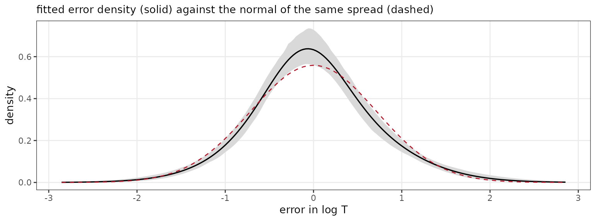
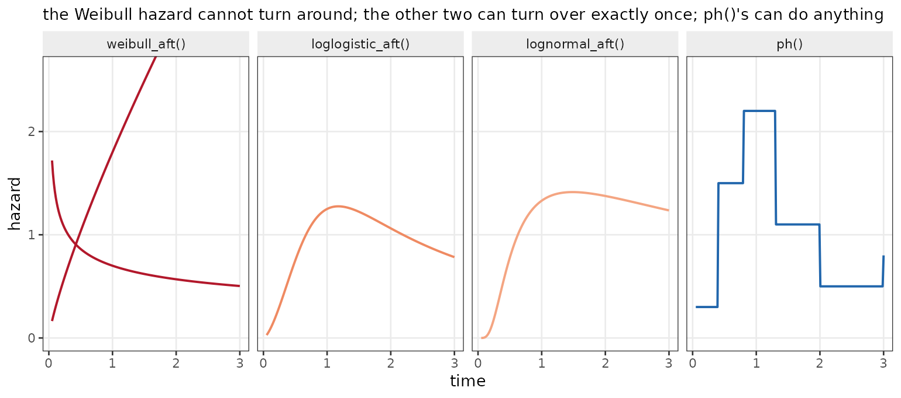
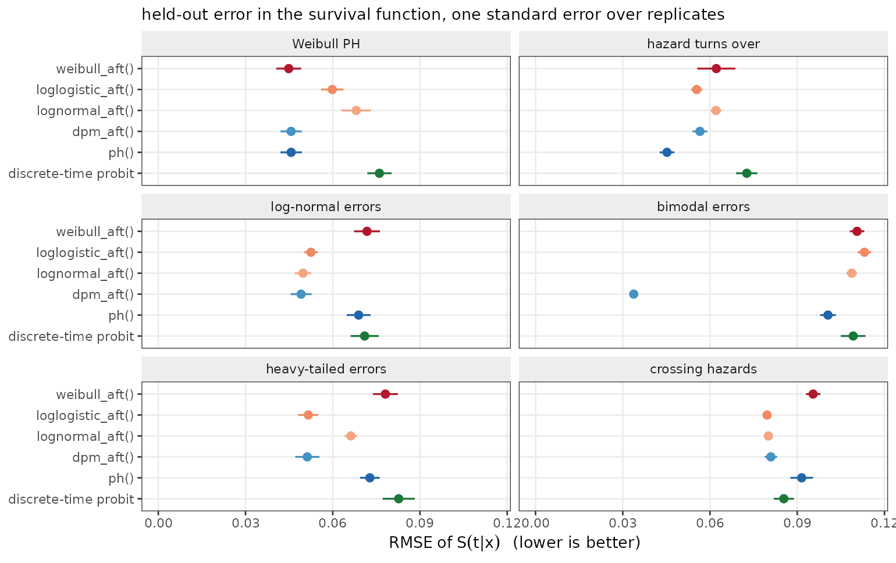
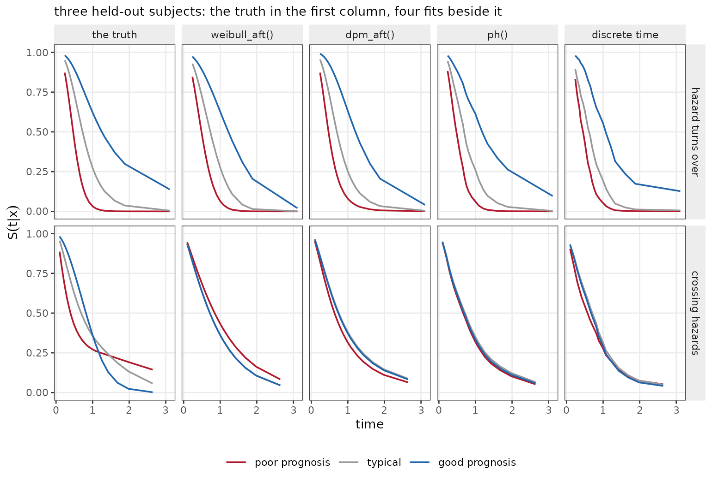
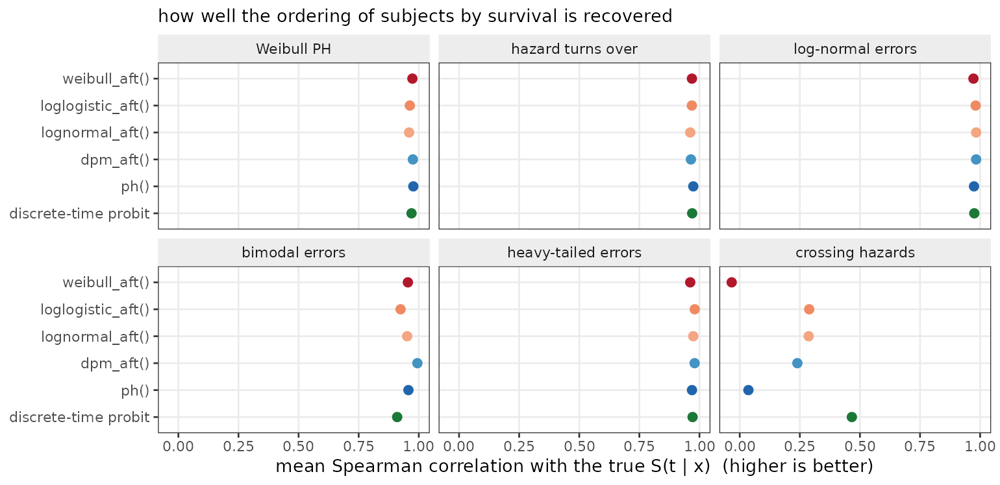
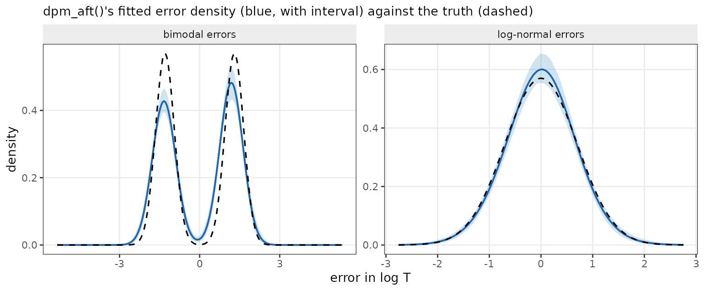
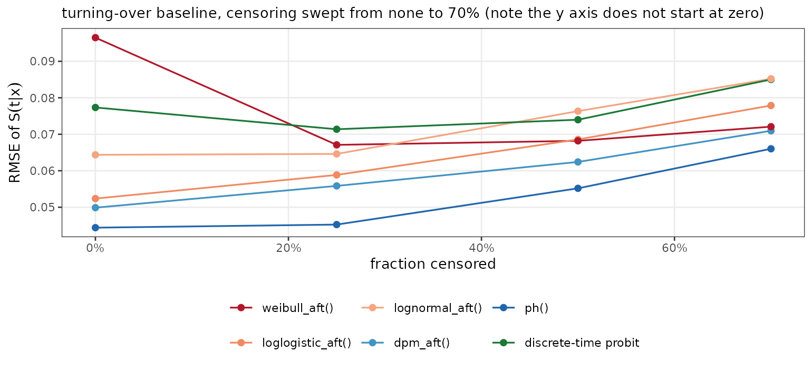
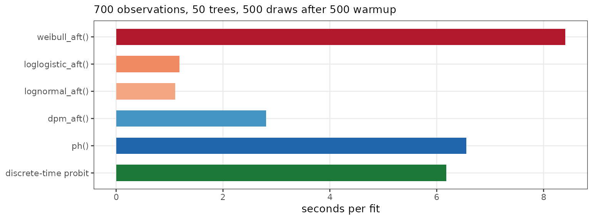

library(bartisan)
library(survival)
set.seed(2026)
# Small chains in the live examples, so that this vignette builds quickly. The
# defaults are 50 trees and 500 draws after 500 warmup iterations, which is
# what the simulations reported below use.
ctrl <- bartisan_control(num_trees = 10, num_burn = 150, num_draws = 150)This vignette is about right-censored time-to-event data. It covers
the five families that take a censored response, what each one is
estimating, which shapes of hazard each can and cannot represent, how
they behave under misspecification and under heavy censoring, and the
route to take when the proportional hazards assumption fails.
vignette("families") gives the short version; this is the
long one.
The recurring theme is that these models disagree about what the predictor means, and that the disagreement mostly stops mattering once you ask for the quantity you actually wanted — survival at a horizon — rather than reading coefficients.
The response
Every family here takes a survival::Surv() object, or
equivalently a two-column numeric matrix of non-negative times and 0/1
event indicators. A 1 means the event was observed at that time; a 0
means the subject was still event-free when last seen, so the true time
is somewhere above it.
n <- 400
d <- data.frame(x1 = runif(n), x2 = runif(n), x3 = runif(n),
trt = rbinom(n, 1, 0.5))
# A log-normal accelerated failure time truth, censored at about 30%. The
# treatment multiplies survival time by exp(0.5).
m <- 1 + 1.5 * sin(3 * d$x1) - 0.8 * d$x2 + 0.5 * d$trt
latent <- exp(m + 0.7 * rnorm(n))
cens <- rexp(n, 0.05)
d$time <- pmin(latent, cens)
d$status <- as.numeric(latent <= cens)
mean(d$status)
#> [1] 0.7Only right censoring is supported: Surv(time, status)
and nothing else. Left-truncated, interval-censored and competing-risks
data need a different likelihood, and custom_family() is
the place to write one.
Censoring is assumed independent of the event time
given the covariates, as it is in every model in this vignette and in
survival::coxph(). That is an assumption about the data,
not about the family, so no choice below relaxes it.
The five families
| Family | Model | The forest gives | Drawn nuisance |
|---|---|---|---|
weibull_aft() |
\(\log T = \eta + \sigma\epsilon\), \(\epsilon\) standard Gumbel | a log time ratio | \(\sigma\) |
loglogistic_aft() |
the same with \(\epsilon\) standard logistic | a log time ratio | \(\sigma\) |
lognormal_aft() |
the same with \(\epsilon\) standard normal | a log time ratio | \(\sigma\) |
ph() |
\(\lambda(t \mid x) = \lambda_0(t)\,e^{r(x)}\) | a log hazard ratio | \(\lambda_0\) on a grid |
dpm_aft() |
\(\log T = m(x) + W\), \(W\) a mixture of normals | \(E[\log T \mid x]\) | the error density |
All five put a BART forest on a single additive predictor and leave something else free. What differs is which part is parametric.
The three accelerated failure time families
These model the log event time directly,
\[\log T = \eta(x) + \sigma\epsilon,\]
with \(\epsilon\) of a fixed shape
and \(\sigma\) drawn and reported in
fit$aux. Multiplying survival time by a constant adds a
constant to \(\eta\), which is what
“accelerated failure time” means: covariates stretch or compress the
time axis without changing the shape of the survival curve.
fit_w <- bartisan(Surv(time, status) ~ x1 + x2 + x3 + trt, data = d,
family = weibull_aft(), control = ctrl)
fit_ln <- bartisan(Surv(time, status) ~ x1 + x2 + x3 + trt, data = d,
family = lognormal_aft(), control = ctrl)
c(weibull = mean(fit_w$aux[, "sigma"]), lognormal = mean(fit_ln$aux[, "sigma"]))
#> weibull lognormal
#> 0.654 0.711They differ only in the error’s shape, and therefore in the shape of the hazard:
-
weibull_aft()has a monotone hazard — increasing, decreasing or flat, but never turning around. It is the only family in the package that is simultaneously an accelerated failure time and a proportional hazards model, so it is the one parametric choice that supports a hazard-ratio reading. It is about seven times slower than the other two — see Speed. -
loglogistic_aft()allows a hazard that rises and then falls, and has the heaviest tails of the three, so a handful of very long survivors move it least. -
lognormal_aft()also allows a non-monotone hazard, with thinner tails than the log-logistic.
In practice the log-logistic and log-normal are hard to tell apart
from data and the Weibull is distinguishable from both, so the
informative comparison is Weibull against either of the other two, by
loo().
ph(): a free baseline hazard
ph() gives up on a parametric time distribution and
models the hazard instead (Basak et al. 2024):
\[\lambda(t \mid x) = \lambda_0(t)\exp\{r(x)\},\]
with \(\lambda_0\) constant within
each of num_bins pieces whose edges sit at evenly spaced
quantiles of the observed times. This is the piecewise-exponential
proportional hazards model with a forest on the log hazard ratio. The
baseline can take any shape at all, including one that turns over, which
none of the three parametric families can do.
fit_ph <- bartisan(Surv(time, status) ~ x1 + x2 + x3 + trt, data = d,
family = ph(), control = ctrl)
head(round(colMeans(fit_ph$aux), 3))
#> lambda1 lambda2 lambda3 lambda4 lambda5 lambda6
#> 0.013 0.043 0.079 0.070 0.082 0.078The bin hazards come back as lambda1,
lambda2, … alongside lambda_rate, the drawn
rate of their own Gamma prior — the hazards are shrunk towards each
other through it, which is what keeps a fine grid from overfitting.
One point of interpretation matters here. The predictor and the
baseline are identified only jointly: multiplying \(\lambda_0\) by a constant and subtracting
its log from \(r(x)\) leaves the
likelihood unchanged. The fit resolves this by letting the baseline
carry the level and reporting \(r(x)\)
centered, so fit_ph’s predictor is a contrast, not
a level. Differences between two values of \(r\) are meaningful; a single value is
not.
dpm_aft(): the error distribution estimated rather than
assumed
dpm_aft() is an accelerated failure time model with the
shape of the error left free (Henderson et al. 2020), and is the
family used when a Surv response is given and no
family is named:
\[\log T = m(x) + W, \qquad W \sim \text{a Dirichlet process mixture of normals},\]
with the mixture constrained to mean zero, so \(m(x)\) is the conditional mean of \(\log T\). It is dpm()’s error
model with censoring added: each sweep, a right-censored log-time is
imputed from the mixture component it currently sits in, truncated below
at its censoring time.
fit_dpm <- bartisan(Surv(time, status) ~ x1 + x2 + x3 + trt, data = d,
family = dpm_aft(), control = ctrl)
round(colMeans(fit_dpm$aux), 3)
#> alpha clusters center error_sd
#> 1.069 6.040 0.048 0.714error_density() reports what the error distribution came
out looking like, which is the diagnostic the model exists to
provide:
ed <- error_density(fit_dpm)
# The normal a lognormal_aft() fit would have assumed, given the same spread.
sd_fitted <- mean(fit_dpm$aux[, "error_sd"])
ggplot(ed, aes(at, mean)) +
geom_ribbon(aes(ymin = lower, ymax = upper), fill = "grey85") +
geom_line(linewidth = 0.5) +
stat_function(fun = dnorm, args = list(sd = sd_fitted),
linetype = 2, colour = "#B2182B") +
labs(x = "error in log T", y = "density",
subtitle = "fitted error density (solid) against the normal of the same spread (dashed)")
Because the mixture can collapse to a single component, it costs
almost nothing when a single normal was the right answer — the property
that makes it a reasonable default rather than a specialist tool. Nor
does it cost much time: conditional on which component each observation
sits in, the model is Gaussian, so it takes the same fast path
lognormal_aft() does and the mixture update on top is
cheap. It runs at about twice lognormal_aft()’s cost and a
third of weibull_aft()’s.
What the predictor means: three estimands, not one
The five families report three genuinely different quantities, and they are not rescalings of each other.
| Family | A one-unit increase in the predictor means |
|---|---|
the three *_aft()
|
survival time multiplied by \(e\), at every quantile of the curve |
ph() |
the hazard multiplied by \(e\), at every time |
dpm_aft() |
the mean of \(\log T\) raised by one |
A time ratio and a hazard ratio move in opposite directions — a covariate that raises the hazard shortens survival — and their magnitudes are related only through the shape of the baseline. Under a Weibull with shape \(k\) the two coincide up to a factor: a log hazard ratio of \(\beta\) is a log time ratio of \(-\beta/k\). Away from the Weibull there is no such correspondence at all.
dpm_aft()’s predictor is a third thing. It is the mean
of \(\log T\), not the median and not a
quantile, so it is only a time ratio to the extent that the error
density is symmetric — which is exactly what dpm_aft()
declines to assume.
The estimand you usually want
None of the three is normally the question. The question is usually about survival at a horizon: the difference in one-year survival between treated and untreated, say. That is a contrast in \(S(t \mid x)\) at a fixed \(t\), and it is on the same scale — a probability — no matter which family produced it.
head(predict(fit_ph, type = "survival", times = c(1, 2, 5)), 3)
#> 1 2 5
#> [1,] 0.991 0.973 0.851
#> [2,] 0.983 0.949 0.732
#> [3,] 0.921 0.774 0.225and inside the estimand machinery:
library(marginaleffects)
# The average difference in survival at t = 5 that the treatment is worth.
avg_comparisons(fit_ph, variables = "trt", type = "survival", times = 5)
#>
#> Estimate 2.5 % 97.5 %
#> 0.176 0.111 0.234
#>
#> Term: trt
#> Type: survival
#> Comparison: 1 - 0One time per call. marginaleffects warns that it
does not recognize times, because it checks the dots
against a whitelist hardcoded per model class and offers no hook for
registering an argument; it passes the argument through regardless and
the result is correct. The warning is suppressed here.
This works identically for all five families. It is the reason
type = "survival" exists rather than leaving the curve to
be assembled by hand from the draws, and it is the recommended way to
report a survival model from this package: it sidesteps the estimand
mismatch above, it comes with a posterior interval, and it is comparable
across families in a way that the predictors are not.
type = "response" is the median survival time for all
five, which is the other scale-free summary and is often easier to
communicate than a curve.
Which hazard shapes each family can represent
Most of the differences in what follows come down to one picture. The
parametric families constrain the hazard’s shape; ph() does
not.

dpm_aft() is not in the figure because its hazard shape
is whatever the fitted error mixture implies, which can be multi-modal —
a hazard with more than one peak, which none of the other four can
produce.
A comparison across six truths
The script is _dev/survival-sim.R in the package
sources.
Every truth uses the same nonlinear function of five covariates, so the families differ only in how well they cope with the shape of the time distribution built around it. The six truths are:
| Truth | What it is | Exactly right for |
|---|---|---|
| Weibull PH | proportional hazards with a Weibull baseline |
weibull_aft() and ph()
both |
| hazard turns over | proportional hazards, baseline hazard rises then falls | ph() |
| log-normal errors | accelerated failure time, normal errors | lognormal_aft() |
| bimodal errors | accelerated failure time, two-component error | dpm_aft() |
| heavy-tailed errors | accelerated failure time, \(t_3\) errors | none; dpm_aft() and
loglogistic_aft() nearest |
| crossing hazards | the covariate effect reverses sign over time | none of the five, nor the discrete-time route exactly |
The primary metric is the RMSE of the fitted survival function \(S(t \mid x)\) against the true one, on held-out subjects and over twenty times spanning the 5th to 95th percentile of the event-time distribution. It is used because it is on the same scale for every family, which the predictors are not.

| Truth | weibull_aft() | loglogistic_aft() | lognormal_aft() | dpm_aft() | ph() | discrete-time probit |
|---|---|---|---|---|---|---|
| Weibull PH | 0.045 | 0.060 | 0.068 | 0.046 | 0.046 | 0.076 |
| hazard turns over | 0.062 | 0.055 | 0.062 | 0.057 | 0.045 | 0.073 |
| log-normal errors | 0.072 | 0.052 | 0.050 | 0.049 | 0.069 | 0.071 |
| bimodal errors | 0.111 | 0.113 | 0.109 | 0.034 | 0.101 | 0.109 |
| heavy-tailed errors | 0.078 | 0.052 | 0.066 | 0.051 | 0.073 | 0.083 |
| crossing hazards | 0.095 | 0.080 | 0.080 | 0.081 | 0.092 | 0.085 |
Five things to read off it.
Being exactly right is worth surprisingly little. On
the Weibull truth, which weibull_aft() and
ph() both describe exactly, weibull_aft()
leads at 0.045 — and ph() and dpm_aft(),
neither of which is given the shape, are level with it at 0.046. Being
wrong costs far more than being right gains:
lognormal_aft() pays 0.068 on the same data. So the
question worth asking of a family is not how much it wins when its
assumption holds, but how much it loses when it does not.
ph() wins where the baseline turns over, and
only there. At 0.045 against 0.055 for the best parametric
alternative, it is clearly ahead on the case the three parametric
families structurally cannot fit. But this is the one truth in the table
where it leads. On the two accelerated failure time truths it is among
the worst — 0.069 on log-normal errors against 0.049 — because
proportional hazards is an assumption too, and it is the wrong one
there.
When the error is badly shaped, dpm_aft() wins
by a wide margin. On the two-component error it is three times
more accurate than anything else and 300 log points ahead, because no
other family in the set can represent a bimodal time distribution at any
value of its parameters. The heavy-tailed case is milder, and there
loglogistic_aft() matches it — which is what the
log-logistic’s heavy tails are for.
dpm_aft() costs nothing when it is not needed,
and it is the most consistent family in the table. On
log-normal errors it sits at 0.0491 against the correctly specified
lognormal_aft()’s 0.0498; on the Weibull truth, 0.0457
against weibull_aft()’s 0.0449. It is best or tied-best on
four of the six truths and never worse than third on any. That asymmetry
— large gains when the assumption is wrong, no measurable loss when it
is right — is what makes it a sensible default for anyone without a view
about the error’s shape.
When hazards cross, the RMSE column understates the damage. Every family lands between 0.080 and 0.096, which looks like a mild penalty. It is not: the ranking column shows that the models have absorbed a reversing covariate effect into almost no covariate effect at all. See the discrete-time route below.
The same picture as fitted curves
The aggregate numbers hide how the misspecified fits are wrong. Here are the fitted survival curves for three held-out subjects under the two truths where the families disagree most, against the truth in black.

In the top row every fit recovers the separation between the three
subjects; they differ in the level. weibull_aft() sends the
good-prognosis curve to zero well before the truth does, because a
monotone hazard cannot flatten out the way this baseline does;
ph() and dpm_aft() track it, and the
discrete-time fit is visibly steppy at this grid resolution.
The bottom row is the one to look at. The true curves separate widely
and then reverse — the subject with the best prognosis
at the middle of the grid has the worst survival by the end of it, and
the three curves cross. No fit reproduces that, which is the structural
limitation stated as a picture. But the symptom is not a distorted
covariate effect; it is a missing one. ph() and the
discrete-time fit put all three subjects on essentially the same curve.
weibull_aft() and dpm_aft() keep a little
separation, in one fixed order, which is right over part of the range
and wrong over the rest. A model that must apply the same covariate
effect at every time, given an effect that is positive early and
negative late, averages it to approximately nothing.
Two cautions on reading this panel. It shows three subjects, not the
sample: the discrete-time route scores much better than
ph() on the ranking measured over all 700, and that
advantage is not what this figure is showing. And the survival RMSE for
this row was an unremarkable 0.08 to 0.10 — the failure is severe and
the headline metric does not say so.
Recovering the ordering of risk
A weaker question than the curve itself is whether the model gets the ordering of subjects right at each time. Misspecification costs much less here.

On all five truths where the covariate effect is constant in time, every family recovers the ordering at a correlation between 0.92 and 0.99, whether or not it has the shape right. The spread across families is a few hundredths where the spread in the survival curve was a factor of three.
The crossing truth is the exception, and there the column collapses:
the discrete-time model reaches 0.47, the accelerated failure time
families 0.24 to 0.29, and ph() and
weibull_aft() essentially zero — 0.04 and \(-0.03\), which is to say no information
about who is at risk at a given time. This is the same erasure the
curves showed, measured.
The practical reading: if all you need is who is at higher risk, and the covariate effect does not move with time, the choice of family barely matters. It matters when you need the curve, an absolute probability, or the shape of the hazard — and it matters enormously when the effect does move with time, which is the one case where the ordering is not recoverable at all.
The error density, recovered
On the bimodal truth dpm_aft()’s advantage is not a
tuning gain; it is that it can see the shape the other families are
assuming away.

It finds both components when they are there and collapses to something close to a single normal when they are not. That is the whole argument for the family.
Held-out log scores
The log score is the other natural metric, and it can be made comparable across all five families — but only after a correction, which is the subject of a trap below. With the correction applied:
| Truth | weibull_aft() | loglogistic_aft() | lognormal_aft() | dpm_aft() | ph() |
|---|---|---|---|---|---|
| Weibull PH | -191 | -212 | -226 | -193 | -200 |
| hazard turns over | -301 | -289 | -305 | -289 | -292 |
| log-normal errors | -856 | -822 | -815 | -815 | -864 |
| bimodal errors | -1062 | -1058 | -1027 | -711 | -1017 |
| heavy-tailed errors | -912 | -866 | -915 | -859 | -899 |
| crossing hazards | -474 | -468 | -476 | -468 | -474 |
The two metrics agree on which family to prefer on five of the six
truths. The exception is the turning-over baseline, where
ph() leads on the survival curve but sits third on the log
score — behind dpm_aft() and
loglogistic_aft(), and by three log points, which is inside
the noise. The reason is that the log score is evaluated at each
subject’s own observed time, which is by construction where the data are
dense, while the survival RMSE is averaged over a grid that reaches into
the tail. Families differ less in the middle than at the edges.
Where the shape of the density is genuinely wrong the log score is
the harsher of the two: on the bimodal truth dpm_aft() is
ahead by more than 300 log points, a much larger gap than the threefold
one in the RMSE table.
That the correction works at all is worth one check. On the Weibull
truth, where weibull_aft() and ph() fit the
same model by different parameterizations, they score \(-191\) and \(-200\). Without the Jacobian they would be
several hundred apart, which is the size of \(\sum \delta_i \log t_i\) on this data and
has nothing to do with either fit.
Censoring
More censoring means less information, so every family gets worse. The question is whether it changes which family to prefer.

ph() is best at every level, from no
censoring to 70%, and no parametric family overtakes it at any point on
this truth. So the recommendation is stable in the amount of censoring,
which is the question that mattered.
The degradation is gentle up to about half the observations censored
— ph() goes from 0.044 to 0.055 — which is the usual
reassurance about likelihood-based survival analysis: a censored
observation is not a missing one, it contributes \(S(t)\) and that is real information. Beyond
half, the curves steepen.
One line does not behave, and it is worth
understanding rather than passing over. weibull_aft() is
the worst family in the panel with no censoring at all, at
0.097, and it gets better as censoring increases,
reaching 0.072 at 70%. Everything else degrades monotonically. The
likely reason is that this truth has a heavy, polynomial tail, which a
Gumbel error in log time cannot represent; with no censoring the fit is
dragged by observed times far out in that tail, and censoring truncates
exactly the observations it cannot accommodate. Censoring is protecting
a misspecified model from the part of the distribution it gets wrong.
That is a caution about reading a fit’s apparent quality off a heavily
censored sample, not a reason to want censoring.
One expectation the sweep did not bear out: dpm_aft()
might have been expected to suffer most under heavy censoring, since it
estimates a whole density from log-times that are increasingly imputed
rather than observed. It does not. Over the sweep its error grows by a
factor of 1.4, against 1.5 for both ph() and
loglogistic_aft(). Its advantage is not fragile in the way
the extra machinery suggests.
When hazards are not proportional
Every family above assumes that covariates act the same way at every
time — the accelerated failure time families by stretching the time
axis, ph() by scaling the hazard. When that fails, and in
particular when survival curves cross, none of them can fit the data,
and the failure is structural rather than a matter of flexibility.
The model to reach for is a discrete-time hazard,
and it needs no new family. Expand the data to one row per subject per
time point up to their own, then fit binomial("probit")
with time as a covariate. This is the nonparametric
survival BART of Sparapani et al. (2016); because the hazard becomes
an arbitrary function of \((t, x)\),
nothing is assumed about proportionality at all.
# The grid: quantiles of the observed event times.
edges <- quantile(d$time[d$status == 1], seq(0.05, 0.95, length.out = 15))
expand_dt <- function(d, edges, xnames) {
reached <- pmin(pmax(findInterval(d$time, edges, rightmost.closed = TRUE), 1L),
length(edges))
long <- d[rep(seq_len(nrow(d)), reached), xnames, drop = FALSE]
long$tbin <- unlist(lapply(reached, seq_len))
long$ev <- 0
long$ev[cumsum(reached)] <- d$status # the event lands on the last row
long
}
long <- expand_dt(d, edges, c("x1", "x2", "x3", "trt"))
c(subjects = nrow(d), rows = nrow(long))
#> subjects rows
#> 400 2929
fit_dt <- bartisan(ev ~ ., data = long, family = binomial("probit"),
control = ctrl)The survival function is the running product of one minus the fitted hazards:
grid_dat <- d[rep(1:3, each = length(edges)), c("x1", "x2", "x3", "trt")]
grid_dat$tbin <- rep(seq_along(edges), 3)
h <- matrix(predict(fit_dt, newdata = grid_dat, type = "response"),
nrow = length(edges))
round(t(apply(1 - h, 2, cumprod))[, c(1, 8, 15)], 3)
#> [,1] [,2] [,3]
#> [1,] 0.995 0.935 0.233
#> [2,] 0.979 0.768 0.045
#> [3,] 0.852 0.189 0.002binomial("probit") is the fastest family in the package,
so the cost is the expansion rather than the sampler: the number of rows
is the sum of how many grid points each subject reaches. Fifteen to
twenty grid points is usually plenty; a finer grid multiplies the rows
without adding much.
How it compares. From the same simulation, on the
two truths that separate it from ph():
| Truth | Family | S RMSE | worst t | ranking |
|---|---|---|---|---|
| hazard turns over | ph() | 0.045 | 0.057 | 0.974 |
| hazard turns over | dpm_aft() | 0.057 | 0.068 | 0.964 |
| hazard turns over | weibull_aft() | 0.062 | 0.083 | 0.969 |
| hazard turns over | discrete-time probit | 0.073 | 0.091 | 0.970 |
| crossing hazards | dpm_aft() | 0.081 | 0.106 | 0.240 |
| crossing hazards | discrete-time probit | 0.085 | 0.111 | 0.466 |
| crossing hazards | ph() | 0.092 | 0.130 | 0.036 |
| crossing hazards | weibull_aft() | 0.095 | 0.133 | -0.034 |
The trade is sharper than one might hope, in both directions.
Under proportional hazards it is the worst model in the whole
comparison, not a close second — 0.073 against
ph()’s 0.045 on the turning-over baseline, and 0.076
against 0.046 on the Weibull. It nests proportional hazards, so this is
not bias; it is the cost of making the forest learn the baseline through
splits on time while it is also learning the covariate effect, where
ph() draws the baseline in closed form and spends the whole
forest on \(x\). Freedom is not free,
and here it is expensive.
Under crossing hazards it does not win on the survival curve either — 0.085, behind the accelerated failure time families at 0.080. What it wins is the thing that matters: the ranking, at 0.47 against 0.29 and below for everything else. It is the only model in the set that recovers any of the reordering, and recovering some of a reversing effect while getting the level slightly worse is the better failure of the two.
Three further costs. The expansion inflates the data, so a large
study with a fine grid gets slow. The grid is a real choice, unlike
ph()’s bins, because it sets the resolution of the hazard
in \(t\) and the resolution at
which non-proportionality can be detected at all. And there is no
sigma, no baseline and no error density to report — the
model is a hazard surface, summarized through
type = "response" and the curve, and
type = "survival" does not apply to it because as far as
the package is concerned it is a binomial fit.
When to use it. When you have a substantive reason
to expect the covariate effect to move with time — a treatment whose
benefit accrues or wears off, a risk factor that matters only early. Not
as a hedge: under proportional hazards it is the most expensive option
in the comparison, so reaching for it “just in case” costs about as much
as being wrong about the error distribution. If the question is whether
hazards are proportional, fitting it alongside ph() and
comparing the fitted curves is a reasonable diagnostic; adopting it by
default is not.
Three traps
The log score does not use the same measure for every family
predict(type = "density") returns, for each observation,
its contribution to the likelihood — a density for an event and \(S(t)\) for a censored observation.
The density is not on the same scale for every family.
The accelerated failure time families, dpm_aft() included,
report the density of \(\log T\);
ph() reports the density of \(T\). Censored contributions are survival
probabilities and carry no measure at all.
So the two differ by a Jacobian, on events only:
# Put an accelerated failure time family's log score on the density of T,
# so that it is comparable with ph()'s.
log_score_T <- function(fit, newdata) {
ld <- sum(predict(fit, newdata = newdata, type = "density", log = TRUE))
if (identical(fit$family$family, "ph")) ld
else ld - sum(newdata$status * log(newdata$time))
}
c(lognormal = log_score_T(fit_ln, d), ph = log_score_T(fit_ph, d))
#> lognormal ph
#> -777 -787Without the correction the comparison is meaningless: on one of the
simulations above the uncorrected gap between ph() and the
accelerated failure time families exceeded a thousand log points and
reversed which family looked better. loo() and
waic() inherit the same issue, since they are built on the
same pointwise densities — they are valid for comparing two accelerated
failure time families, or two ph() fits, and invalid across
the two groups.
If you would rather not think about it, compare on \(S(t \mid x)\) from
predict(type = "survival"), which is a probability for
every family and needs no correction.
ph()’s predictor is a contrast, not a level
Because the baseline absorbs the level, a single fitted value of
ph()’s predictor has no interpretation on its own; only
differences do. predict(type = "link") is centered
accordingly. If you want a level, ask for a quantity that has one:
type = "survival", or type = "response" for
the median time.
num_bins is not a tuning parameter
ph() exposes num_bins, and it is fair to
ask whether you are being made to make a choice. Sweeping it over a
sixty-fold range on the same two proportional-hazards truths, at 700
observations where the default is 9:
| Bins | S(t | x) RMSE | r(x) RMSE | effective parameters | Pareto k above 0.7 |
|---|---|---|---|---|
| 4 | 0.052 / 0.044 | 0.199 / 0.176 | 27 / 23 | 0.0% / 0.0% |
| 9 | 0.051 / 0.042 | 0.194 / 0.166 | 31 / 28 | 0.0% / 0.0% |
| 20 | 0.051 / 0.044 | 0.191 / 0.176 | 41 / 39 | 0.0% / 0.0% |
| 50 | 0.054 / 0.044 | 0.200 / 0.178 | 69 / 66 | 0.1% / 0.0% |
| 100 | 0.055 / 0.043 | 0.200 / 0.176 | 108 / 106 | 0.0% / 0.0% |
| 250 | 0.063 / 0.050 | 0.222 / 0.206 | 203 / 201 | 1.3% / 1.0% |
From 4 bins to 100 the estimates are flat — a twenty-five-fold range, no trend in either error column, and every difference inside the replicate-to-replicate spread, which is about 0.009 and 0.005 respectively. The default sits near the bottom of that plateau, and moving anywhere inside it changes nothing you would notice.
At 250 bins something does happen, consistently in both truths and
both error columns: the error rises by about 20% and the Pareto-\(k\) diagnostics start to be troubled. This
is over-parameterization becoming visible — 250 bins on 700 observations
gives about 200 effective parameters, and the shrinkage through
lambda_rate is no longer enough to absorb it. Push further,
to one piece per event time, and each observation’s density is inflated
by a parameter only that observation informs: measured that way the
effective parameter count exceeded the sample size and more than half
the Pareto-\(k\) values went above 0.7,
at which point loo() and waic() stop being
usable at all.
So the shape of the thing is a wide flat plateau with a cliff a long
way past the default, not a peak you have to find. num_bins
is exposed for confirming that on your own data rather than for tuning:
fit at the default and again at two or three times it, and if the
answers agree — they will — stop thinking about it.
This is also the answer to a question that comes up: why not fit
Cox’s partial likelihood, which needs no grid at all? Because
it couples observations through risk sets, so it does not decompose into
a sum over the observations reaching a leaf, which is what this sampler
requires. ph() fits the full likelihood of the
piecewise-exponential model instead, which does decompose, and which
approaches the partial likelihood as the bins shrink. A grid-free
version was built and measured against this one (Linero et al.
2022); it was no more accurate, and it broke
loo(), for the reason above.
Speed

The spread is about eightfold, and it does not follow the families’ flexibility at all.
lognormal_aft() and loglogistic_aft() are
the fastest, at about 1.2 seconds, because both reach the sampler’s
quadratic fast path through data augmentation — the augmented target is
exactly quadratic in the predictor, so the leaf draw is a closed form
rather than a Laplace approximation. dpm_aft() comes next
at about 2.8 seconds, because conditional on which mixture component
each observation currently sits in it is also exactly Gaussian,
and so takes the same fast path; the Dirichlet process update on top of
that is cheap. ph() and the discrete-time route sit at
about six seconds. The slowest family is weibull_aft(), at
about 8.4 seconds, because its likelihood takes the exponential path
rather than the quadratic one. None of these is slow enough at this
sample size to drive the choice. Fit the one that matches the question;
speed is a reason to prefer lognormal_aft() only when you
are fitting many models rather than one.
Choosing
| If | Use |
|---|---|
| you have no view about the shape of anything | dpm_aft() |
| you want the same, but the fit has to be quick |
lognormal_aft() or
loglogistic_aft()
|
| the shape of the baseline hazard is the point | ph() |
| you want a hazard ratio from a parametric fit | weibull_aft() |
| you only need to know who is at higher risk | any of them, if the effect is constant in time |
| the covariate effect may move with time | the discrete-time route, not a family |
| you want to report a treatment effect | any of them, through
type = "survival"
|
dpm_aft() heads the table, and is the default for an
unnamed Surv response, on the evidence above rather than on
principle: it was best or tied-best on four of the six truths and never
worse than third, and on the two truths where a parametric family was
exactly right it matched that family to the third decimal. It is also,
contrary to what its flexibility suggests, one of the cheaper families
to fit — about twice lognormal_aft() and a third of
weibull_aft(). The second row is for fitting many models
rather than one.
Two closing points that the numbers above support and that are easy to lose sight of.
The families disagree far more about the density than about the ordering. If your question is comparative — who is at higher risk, which arm does better — you have a lot of freedom in the choice and should spend your effort elsewhere. If your question is an absolute probability at a horizon, the choice matters and the comparison above is worth taking seriously.
And the failure that costs most is non-proportionality, not the shape
of the error. Getting the error wrong cost a factor of three at worst,
and dpm_aft() insures against it for nothing. A covariate
effect that reverses over time cost every family in the table the entire
covariate signal — an effect estimated at approximately zero, with a
survival RMSE that looked unremarkable while it happened.
ph() and dpm_aft() each relax one thing while
holding proportionality or acceleration fixed; the discrete-time route
is the only option here that relaxes that, and it is worth its
cost exactly when the substance suggests an effect that moves with
time.